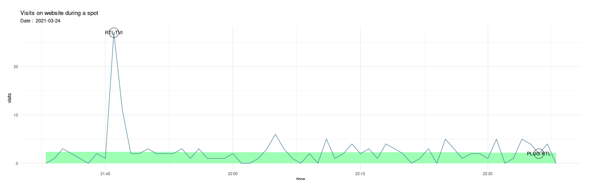
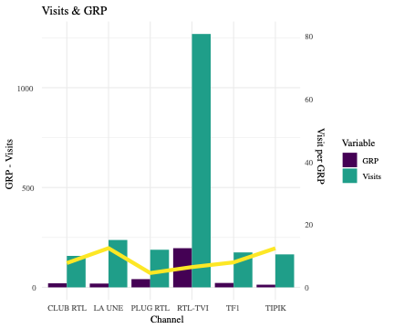
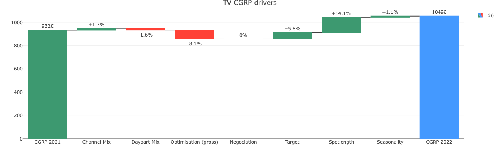

TV Performance
and Drive to web
Drive to Web
When an advertiser invest in Television, (s)he may have performance KPI’s as objective : website visits, contact forms, application downloads,…
We provide an analysis which count the fall outs of a TV (or radio) campaign on the web
Attribution of visits to a TV spot
If a spot is designed to drive performance, odds are we can see on visits’ logs. We can model the visits and calculate how much came within 3 minutes of the broadcast of a spot.

Alone, visits of a spot is not relevant. But on a campaign or year basis, insigths are usefull in campaign optimisation.
Clear insights on TV campaign management
This analysis puts the standard TV analysis in perspective. This one generally involve cost management,reach and GRP analysis. But it does not give any insights on the quality of broadcast.
We can calculte how much visits are generated by GRP. This ratio gives an insight of ** how effective stays the advertising campaign in time **. A decreasing Visits/GRP ratio means you’re ad is less effective and something must be changed.$
We can calculate an optimum frequency per channel, a threshold after which one you’re loosing money on touching the same person over and over again. If TV viewers do not want more information after viewing a spot 10 times, he probably won’t after 20 and it’s time to test another approach.

Caveat
This approach performs well with a clear performance strategy : an action is asked to the viewer, with a proper call to action, and a clear landing page. We do not recommend it for pure brand spots.
Advanced TV analytics
Parallely to the drive to web approach, an advanced TV analysis is useful to understand why a campaign decreases in efficiency. We list reasons why a campaign is more or less expensive, and spread the difference between multiple drivers. Those factors can be grouped as :
Tactical drivers
The execution of the campaign changes its price : the choice of TV channels, prime time ratio, top & tails, .. can have a significative impact of your final CGRP. Those factors are generally on the media agency side.
We isolate the effect of each and clear insights on how the cost per GRP can be decreased.
Strategical drivers
Some factors are more strategic : the audience or target, seasonality of investments, the duration of the spots, .. They are part of the marketing strategy and not inherent to TV strategy.
Those drivers have a signficant impact on cost, and are generally part of the briefing to media agencies. Therefore, they are generally on advertiser’s responsability.
